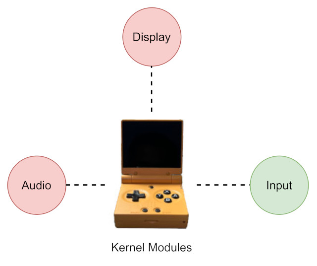
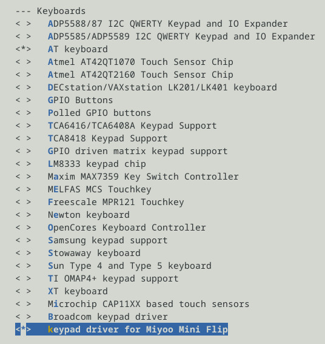
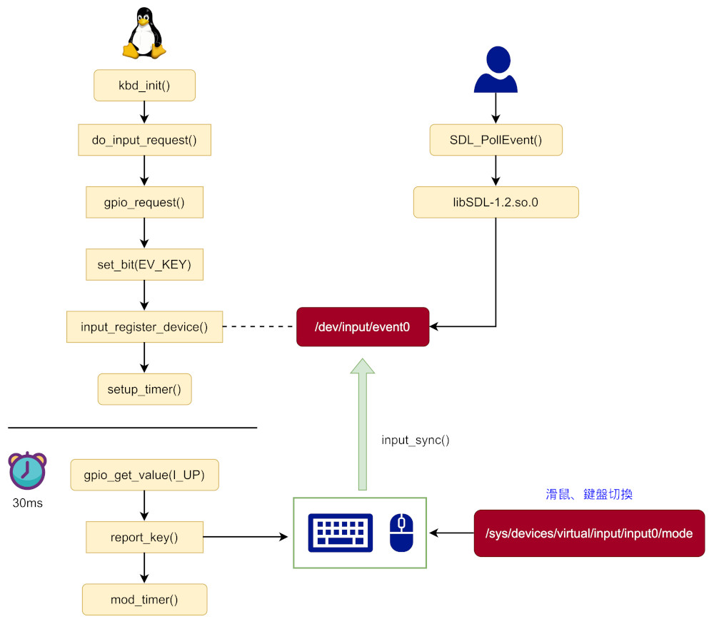
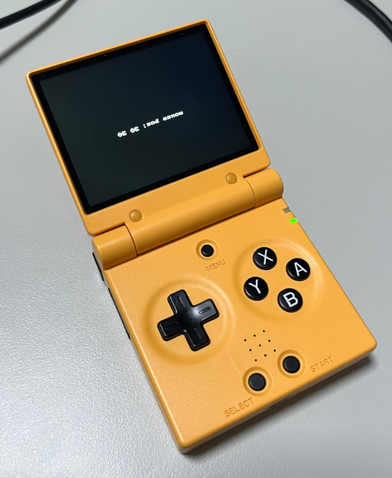
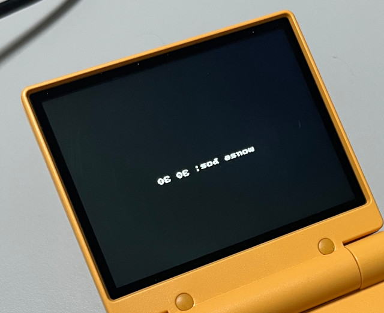

Steward
分享是一種喜悅、更是一種幸福
掌機 - Miyoo Mini Flip - 移植Kernel input
一台掌機要可以運作，最基本的Kernel Module需要有顯示、聲音、輸入，目前Miyoo Mini Flip的顯示、聲音是沒有開源且沒有相關CPU Datasheet可以參考，不過司徒這次想幫Miyoo Mini Flip製作一個鍵盤+滑鼠的複合式裝置，這樣玩模擬器就可以切換成鍵盤模式或者滑鼠模式

司徒已經先將按鍵腳位測試出來
UP = PA.1 DOWN = PC.5 LEFT = PC.6 RIGHT = PA.5 A = PA.7 B = PA.6 X = PA.9 Y = PA.8 SELECT = PA.11 START = PA.10 L1 = PA.14 L2 = PA.13 R1 = PB.15 R2 = PC.26 VOLM = PB.10 VOLP = PB.11 MENU = PA.12 POWER = PC.7
drivers/input/keyboard/mmf-keypad.c
/*
* This program is free software; you can redistribute it and/or modify
* it under the terms of the GNU General Public License as published by
* the Free Software Foundation; either version 2 of the License, or
* (at your option)any later version.
*
* This program is distributed in the hope that it will be useful,
* but WITHOUT ANY WARRANTY; without even the implied warranty of
* MERCHANTABILITY or FITNESS FOR A PARTICULAR PURPOSE. See the
* GNU General Public License for more details.
*
* You should have received a copy of the GNU General Public License
* along with this program; if not, write to the Free Software
* Foundation, Inc., 59 Temple Place, Suite 330, Boston, MA 02111-1307 USA
*/
#include <linux/fs.h>
#include <linux/kobject.h>
#include <linux/cdev.h>
#include <linux/init.h>
#include <linux/device.h>
#include <linux/module.h>
#include <linux/delay.h>
#include <linux/timer.h>
#include <linux/gpio.h>
#include <linux/input.h>
#include <linux/kernel.h>
#include <linux/slab.h>
#include <linux/uaccess.h>
#include <linux/backlight.h>
#include <sound/core.h>
#include <sound/pcm.h>
#include <sound/pcm_params.h>
#include <sound/soc.h>
#include <sound/tlv.h>
#include <sound/initval.h>
#include <sound/dmaengine_pcm.h>
#include <linux/gpio.h>
#include <asm/io.h>
#include <asm/irq.h>
#include <asm/gpio.h>
#define DEBUG_LOG 0
#define MOUSE_MODE 0
#define KEYPAD_MODE 1
static int myperiod = 30;
static int mouse_left = 0;
static int mouse_right = 0;
static int mode = KEYPAD_MODE;
static struct input_dev *mydev;
static struct timer_list mytimer;
static uint32_t R_UP = 0x00001;
static uint32_t R_DOWN = 0x00002;
static uint32_t R_LEFT = 0x00004;
static uint32_t R_RIGHT = 0x00008;
static uint32_t R_A = 0x00010;
static uint32_t R_B = 0x00020;
static uint32_t R_X = 0x00040;
static uint32_t R_Y = 0x00080;
static uint32_t R_SELECT = 0x00100;
static uint32_t R_START = 0x00200;
static uint32_t R_L1 = 0x00400;
static uint32_t R_L2 = 0x00800;
static uint32_t R_R1 = 0x01000;
static uint32_t R_R2 = 0x02000;
static uint32_t R_MENU = 0x04000;
static uint32_t R_VOLM = 0x08000;
static uint32_t R_VOLP = 0x10000;
static uint32_t R_POWER = 0x20000;
/*
UP = PA.1
DOWN = PC.5
LEFT = PC.6
RIGHT = PA.5
A = PA.7
B = PA.6
X = PA.9
Y = PA.8
SELECT = PA.11
START = PA.10
L1 = PA.14
L2 = PA.13
R1 = PB.15
R2 = PC.26
VOLM = PB.10
VOLP = PB.11
MENU = PA.12
POWER = PC.7
*/
static uint32_t I_UP = 1;
static uint32_t I_DOWN = 69;
static uint32_t I_LEFT = 70;
static uint32_t I_RIGHT = 5;
static uint32_t I_A = 7;
static uint32_t I_B = 6;
static uint32_t I_X = 9;
static uint32_t I_Y = 8;
static uint32_t I_SELECT = 11;
static uint32_t I_START = 10;
static uint32_t I_L1 = 14;
static uint32_t I_L2 = 13;
static uint32_t I_R1 = 47;
static uint32_t I_R2 = 90;
static uint32_t I_VOLM = 42;
static uint32_t I_VOLP = 43;
static uint32_t I_MENU = 12;
static uint32_t I_POWER = 71;
static int do_input_request(uint32_t pin, const char *name)
{
if (gpio_request(pin, name) < 0) {
printk("failed to request gpio: %s\n", name);
return -1;
}
gpio_direction_input(pin);
return 0;
}
static void print_key(uint32_t val, uint8_t is_pressed)
{
#if DEBUG_LOG
uint32_t i = 0;
uint32_t map_val[] = {
R_UP,
R_DOWN,
R_LEFT,
R_RIGHT,
R_A,
R_B,
R_X,
R_Y,
R_L1,
R_L2,
R_R1,
R_R2,
R_SELECT,
R_START,
R_MENU,
R_VOLM,
R_VOLP,
R_POWER,
-1
};
char *map_key[] = {
"UP",
"DOWN",
"LEFT",
"RIGHT",
"A",
"B",
"X",
"Y",
"L1",
"L2",
"R1",
"R2",
"SELECT",
"START",
"MENU",
"VOL-",
"VOL+",
"POWER",
""
};
for (i = 0; map_val[i] != -1; i++) {
if (map_val[i] == val) {
printk("%s: %s\n", map_key[i], is_pressed ? "Pressed" : "Released");
break;
}
}
#endif
}
static void report_key(uint32_t btn, uint32_t mask, uint8_t key)
{
static uint32_t btn_pressed = 0;
static uint32_t btn_released = 0xffffffff;
if (btn & mask) {
btn_released &= ~mask;
if ((btn_pressed & mask) == 0) {
btn_pressed |= mask;
input_report_key(mydev, key, 1);
print_key(mask, 1);
}
}
else {
btn_pressed &= ~mask;
if((btn_released & mask) == 0) {
btn_released |= mask;
input_report_key(mydev, key, 0);
print_key(mask, 0);
}
}
}
static void input_handler(unsigned long unused)
{
uint32_t val = 0;
static uint32_t pre = 0;
if (gpio_get_value(I_UP) == 0) val |= R_UP;
if (gpio_get_value(I_DOWN) == 0) val |= R_DOWN;
if (gpio_get_value(I_LEFT) == 0) val |= R_LEFT;
if (gpio_get_value(I_RIGHT) == 0) val |= R_RIGHT;
if (gpio_get_value(I_A) == 0) val |= R_A;
if (gpio_get_value(I_B) == 0) val |= R_B;
if (gpio_get_value(I_X) == 0) val |= R_X;
if (gpio_get_value(I_Y) == 0) val |= R_Y;
if (gpio_get_value(I_L1) == 0) val |= R_L1;
if (gpio_get_value(I_L2) == 0) val |= R_L2;
if (gpio_get_value(I_R1) == 0) val |= R_R1;
if (gpio_get_value(I_R2) == 0) val |= R_R2;
if (gpio_get_value(I_SELECT) == 0) val |= R_SELECT;
if (gpio_get_value(I_START) == 0) val |= R_START;
if (gpio_get_value(I_MENU) == 0) val |= R_MENU;
if (gpio_get_value(I_VOLM) == 0) val |= R_VOLM;
if (gpio_get_value(I_VOLP) == 0) val |= R_VOLP;
if (gpio_get_value(I_POWER) == 0) val |= R_POWER;
if (pre != val) {
pre = val;
if (mode == KEYPAD_MODE) {
report_key(pre, R_UP, KEY_UP);
report_key(pre, R_DOWN, KEY_DOWN);
report_key(pre, R_LEFT, KEY_LEFT);
report_key(pre, R_RIGHT, KEY_RIGHT);
report_key(pre, R_A, KEY_LEFTCTRL);
report_key(pre, R_B, KEY_LEFTALT);
report_key(pre, R_X, KEY_SPACE);
report_key(pre, R_Y, KEY_LEFTSHIFT);
report_key(pre, R_L1, KEY_TAB);
report_key(pre, R_L2, KEY_PAGEUP);
report_key(pre, R_R1, KEY_BACKSPACE);
report_key(pre, R_R2, KEY_PAGEDOWN);
report_key(pre, R_SELECT, KEY_ESC);
report_key(pre, R_START, KEY_ENTER);
report_key(pre, R_MENU, KEY_HOME);
report_key(pre, R_VOLP, KEY_VOLUMEUP);
report_key(pre, R_VOLM, KEY_VOLUMEDOWN);
report_key(pre, R_POWER, KEY_POWER);
}
input_sync(mydev);
}
if (mode == MOUSE_MODE) {
int need_sync = 0;
if (val & R_UP) {
need_sync = 1;
input_report_rel(mydev, REL_Y, -5);
}
if (val & R_DOWN) {
need_sync = 1;
input_report_rel(mydev, REL_Y, 5);
}
if (val & R_LEFT) {
need_sync = 1;
input_report_rel(mydev, REL_X, -5);
}
if (val & R_RIGHT) {
need_sync = 1;
input_report_rel(mydev, REL_X, 5);
}
if ((!!(val & R_A)) != mouse_right){
mouse_right = !!(val & R_A);
need_sync = 1;
}
if ((!!(val & R_Y)) != mouse_left){
mouse_left = !!(val & R_Y);
need_sync = 1;
}
if (need_sync){
input_report_key(mydev, BTN_RIGHT, mouse_right);
input_report_key(mydev, BTN_LEFT, mouse_left);
input_mt_sync(mydev);
input_sync(mydev);
}
}
mod_timer(&mytimer, jiffies + msecs_to_jiffies(myperiod));
}
static ssize_t mode_show(struct device *dev, struct device_attribute *attr, char *buf)
{
return sprintf(buf, "%s\n", mode == KEYPAD_MODE ? "keypad" : "mouse");
}
static ssize_t mode_store(struct device *dev, struct device_attribute *attr, const char *buf, size_t count)
{
int rc = -1;
unsigned long v = 0;
rc = kstrtoul(buf, 0, &v);
if (rc) {
return rc;
}
if (v == KEYPAD_MODE) {
mode = KEYPAD_MODE;
}
else {
mode = MOUSE_MODE;
}
return count;
}
static DEVICE_ATTR_RW(mode);
static int __init kbd_init(void)
{
uint32_t ret = 0;
do_input_request(I_UP, "up");
do_input_request(I_DOWN, "down");
do_input_request(I_LEFT, "left");
do_input_request(I_RIGHT, "right");
do_input_request(I_A, "a");
do_input_request(I_B, "b");
do_input_request(I_X, "x");
do_input_request(I_Y, "y");
do_input_request(I_SELECT, "select");
do_input_request(I_START, "start");
do_input_request(I_L1, "l1");
do_input_request(I_L2, "l2");
do_input_request(I_R1, "r1");
do_input_request(I_R2, "r2");
do_input_request(I_VOLM, "vol-");
do_input_request(I_VOLP, "vol+");
do_input_request(I_MENU, "menu");
do_input_request(I_POWER, "power");
mydev = input_allocate_device();
set_bit(EV_KEY, mydev->evbit);
set_bit(KEY_UP, mydev->keybit);
set_bit(KEY_DOWN, mydev->keybit);
set_bit(KEY_LEFT, mydev->keybit);
set_bit(KEY_RIGHT, mydev->keybit);
set_bit(KEY_LEFTCTRL, mydev->keybit);
set_bit(KEY_LEFTALT, mydev->keybit);
set_bit(KEY_SPACE, mydev->keybit);
set_bit(KEY_LEFTSHIFT, mydev->keybit);
set_bit(KEY_ENTER, mydev->keybit);
set_bit(KEY_ESC, mydev->keybit);
set_bit(KEY_TAB, mydev->keybit);
set_bit(KEY_PAGEDOWN, mydev->keybit);
set_bit(KEY_BACKSPACE, mydev->keybit);
set_bit(KEY_PAGEUP, mydev->keybit);
set_bit(KEY_HOME, mydev->keybit);
set_bit(KEY_VOLUMEUP, mydev->keybit);
set_bit(KEY_VOLUMEDOWN, mydev->keybit);
set_bit(KEY_POWER, mydev->keybit);
set_bit(BTN_LEFT, mydev->keybit);
set_bit(BTN_MIDDLE, mydev->keybit);
set_bit(BTN_RIGHT, mydev->keybit);
set_bit(EV_REL, mydev->evbit);
set_bit(REL_X, mydev->relbit);
set_bit(REL_Y, mydev->relbit);
set_bit(REL_WHEEL, mydev->relbit);
mydev->name = "mmf-keypad";
mydev->id.bustype = BUS_HOST;
ret = input_register_device(mydev);
device_create_file(&mydev->dev, &dev_attr_mode);
setup_timer(&mytimer, input_handler, 0);
mod_timer(&mytimer, jiffies + msecs_to_jiffies(myperiod));
return 0;
}
static void __exit kbd_exit(void)
{
device_remove_file(&mydev->dev, &dev_attr_mode);
input_unregister_device(mydev);
del_timer(&mytimer);
}
module_init(kbd_init);
module_exit(kbd_exit);
MODULE_LICENSE("GPL");
MODULE_AUTHOR("Steward Fu <steward.fu@gmail.com>");
MODULE_DESCRIPTION("keypad driver for Miyoo Mini Flip handheld");
drivers/input/keyboard/Kconfig
config KEYBOARD_MMF
tristate "keypad driver for Miyoo Mini Flip"
depends on OF
help
Say Y here if you want to use keypad driver for Miyoo Mini Flip handheld.
To compile this driver as a module, choose M here: the
module will be called mmf-keypad.
drivers/input/keyboard/Makefile
obj-$(CONFIG_KEYBOARD_MMF) += mmf-keypad.o
Device Drivers => Input device support => Keyboards

架構是長這樣

接著我們使用一個SDL測試程式用來測試鍵盤和滑鼠功能
#include <stdio.h>
#include <stdlib.h>
#include <SDL.h>
#include <SDL_gfxPrimitives.h>
int main(int argc, char **args)
{
int mode = 0;
char buf[255] = {0};
SDL_Surface *screen = NULL;
SDL_Init(SDL_INIT_VIDEO);
screen = SDL_SetVideoMode(320, 240, 16, SDL_HWSURFACE);
SDL_FillRect(screen, &screen->clip_rect, SDL_MapRGB(screen->format, 0x00, 0x00, 0x00));
SDL_Flip(screen);
SDL_Event event;
while (1) {
if (SDL_PollEvent(&event)) {
if ((event.type == SDL_KEYDOWN) && (event.key.keysym.sym > 0)){
sprintf(buf, "key: 0x%x", event.key.keysym.sym);
printf("%s\n", buf);
if (event.key.keysym.sym == 0x116) {
char t[128] = { 0 };
sprintf(t, "echo %d > /sys/devices/virtual/input/input0/mode", !!mode);
system(t);
printf("%s\n", t);
mode ^= 1;
}
}
else if (event.type == SDL_MOUSEMOTION) {
int x = 0, y = 0;
SDL_GetMouseState(&x, &y);
sprintf(buf, "mouse pos: %d %d", x, y);
printf("%s\n", buf);
}
else if (event.type == SDL_MOUSEBUTTONUP) {
sprintf(buf, "mouse button up");
printf("%s\n", buf);
}
else if (event.type == SDL_MOUSEBUTTONDOWN) {
sprintf(buf, "mouse button down");
printf("%s\n", buf);
}
SDL_FillRect(screen, &screen->clip_rect, SDL_MapRGB(screen->format, 0x00, 0x00, 0x00));
stringRGBA(screen, 100, 100, buf, 0xff, 0xff, 0xff, 0xff);
SDL_Flip(screen);
}
SDL_Delay(100);
}
SDL_Quit();
return 0;
}
MENU用來切換按鍵和滑鼠功能

從測試可以發現，如果沒有修改SDL元件庫，畫面是上下相反的
